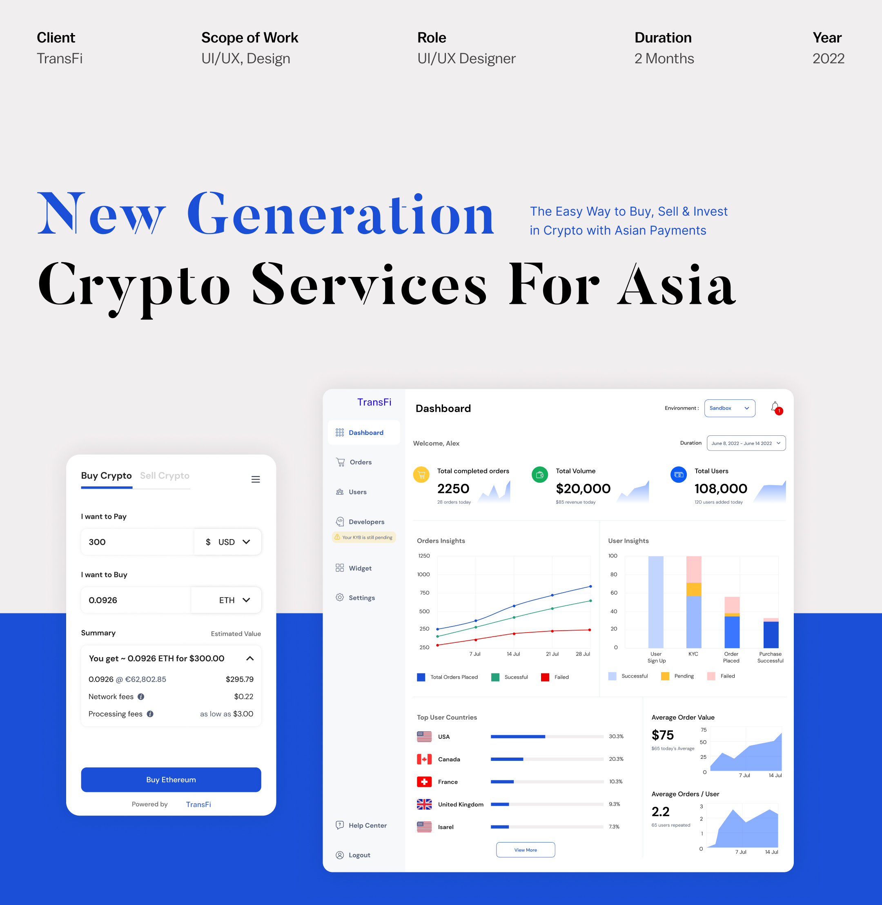

Web3 payments access simplified for the next billion users.
Web3 Is Failing To Serve The Broader Asian Market.
You are solving a big problem. And Asia is very attractive for us
We like local payment methods
— Top 5 DeFi playerFor crypto transactions, the acceptance rates are very low unless the companies have a local presence or focus
— Leading wallet playerOur main challenges are in Philippines, Thailand, India, China and UAE
— Leading hardware walletOnly early crypto adopters & natives, especially those with access to credit cards offered by US providers, have easy access to Web3. Failed KYC, local currencies not supported, long transaction times, unavailable payment methods, and no local language support all block the broader market.
Understanding The Landscape
Before designing, I conducted a competitive audit of crypto payment platforms and interviewed enterprise clients to identify friction points in existing solutions.
Competitive Analysis
Enterprise Client Interviews
I conducted interviews with 12 enterprise clients (wallet providers, DeFi platforms, and exchanges) across 6 Asian markets. Three recurring themes emerged:
- Onboarding friction: Merchants described a "black box" experience — after signing up, they had no visibility into KYB status, integration progress, or what to do next.
- Dashboard overload: Existing dashboards showed raw transaction logs but didn't surface the metrics merchants actually needed: conversion rates, failure reasons, and settlement timelines.
- Localization gaps: End-users in Indonesia, Vietnam, and the Philippines abandoned flows when they encountered unfamiliar payment methods or English-only interfaces.
Design Process
I established a structured design process that balanced speed-to-market with research rigor. Each feature went through discovery (client interviews + data review), definition (flows + wireframes), design (high-fidelity + prototype), and validation (usability testing with 3–5 merchant users before handoff).
Providing A Better User Experience.
Buy & Sell Crypto Screen
The Buy & Sell Crypto screen is a simple and sophisticated interface to help users choose what to pay & buy with a quick summary.
- Select a Crypto and on which chain you want that Crypto to be delivered
- Select a Currency depending on your Country you live in or bank account
Order Summary Screen
It helps you track your progress through statuses: Ordered, Payment Successful, Processed, and Delivered. It also helps users understand any difficulties and duration required for the order to be completed, along with the full order details.
Profile And Trade History
Menu Screen helps the user to login & facilitates different options present in the product.
Trade History Screen gives an overview about your recent crypto purchases and sells.
Profile includes bank account details & wallet addresses which have been previously saved.
Businesses Can Implement The TransFi Widget Easily In 3 Steps.
Measurable Impact Across The Platform.
The redesigned platform launched in phases across 2022–2023. Here are the key outcomes from the product and design work:
Beyond metrics, the redesign shifted TransFi's positioning from a developer-first tool to a product that enterprise clients could evaluate, integrate, and go live with independently — a critical differentiator against competitors in the Asian crypto payments space.
Product strategy, UX research, interaction design, visual design, design system, brand identity